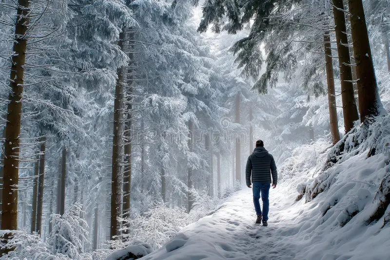

NO! You haven't forgotten about your friends yet! You instead decided to gather the materials to try to find your classmates. You grab a backpack, stuffed with food, materials, weapons, and tools. Somehow all of that was able to fit into a backpack, don't question it! You set a journey to find your friends and look for a piece of paper to document your surroundings by creating a map! As you manage to gather everything, you open the door and walk into the unknown. Good luck!